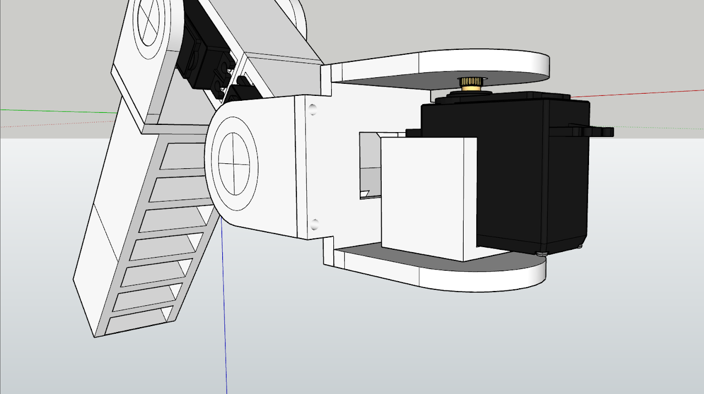
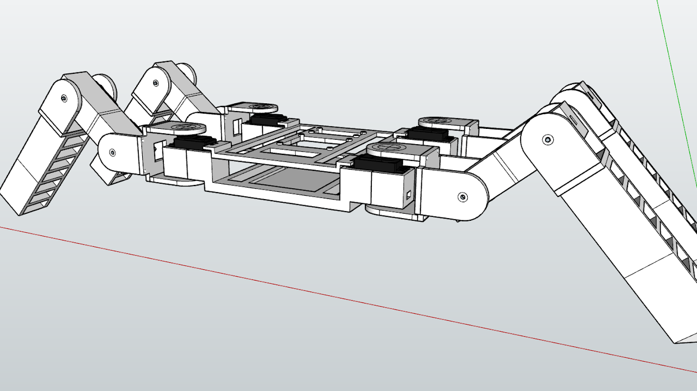
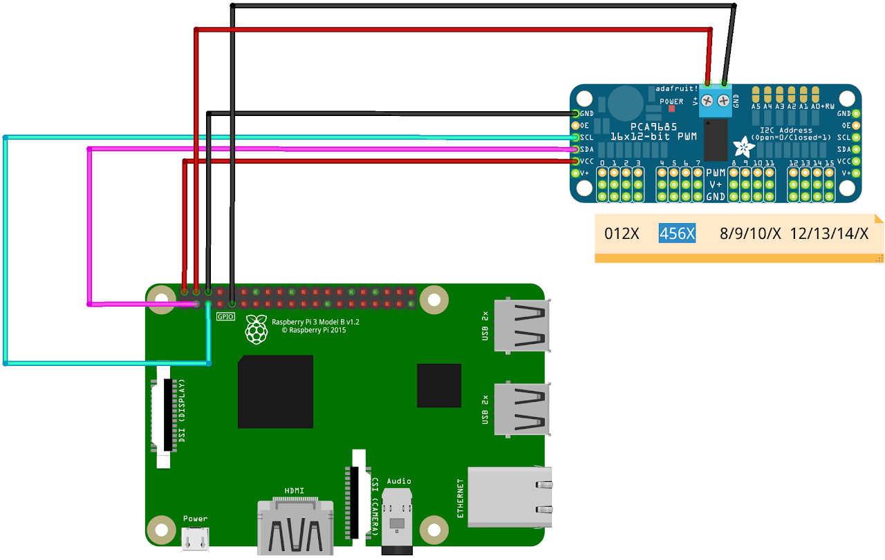

06-07-2022
Arachne es un proyecto completamente open source; puedes encontrar todos los archivos de diseño y programación en su repositorio.
Siempre me ha fascinado todo lo relacionado con “la creación de la naturaleza”. Algo que siempre me ha llamado la atención de esto, son los arácnidos, desde sus asombrosos métodos de supervivencia ( por ejemplo la autotomía, también presentes en lagartos ), así como la manera que tienen de cazar a sus presas hasta su increíble diseño.
Influenciado por esto, empecé a pensar en un robot bio-inspirado, que fuera capaz de mantenerse en pie, tras levantarse. He aquí cuando surgió “Arachne”. El nombre proviene de la mitología Griega.
Principalmente me centré en el diseño; pensé que lo más estético era el diseño con seis patas, pero esto significaba mayores costes en cuanto a electricidad, impresión, tiempo … etc. Por eso dejé de lado esta idea para un futuro y me centré en la funcionalidad. Era el momento de diseñar las patas.

La pata tiene tres grados de libertad para realizar el movimiento. Como podemos apreciar en la imagen, tenemos tres servomotores, uno por sección: extremo, centro, chassis.
Una vez diseñadas las patas, era el turno del chasis, donde iría la elctrónica. El chasis se divide en dos niveles.

El primer nivel es más robusto, debido a que es la unión de todas las patas y debe aportar la robustez necesaria al diseño final. El segundo nivel va atornillado a los servomotores del chasis; es más ligero que el anterior y donde va la electrónica, mientras en el nivel inferior irá la batería.
La electrónica está formada por una Raspberry Pi 3b+ y el integrado PCA9685 (motor driver) que con unas pocas conexiones nos permite conectar hasta 16 servos en nuestra Raspberry.

¡ Arachne se levanta y mantiene de pie !
Arachne is a completely open source project; you can find all the design and programming files in its repository.
I have always been fascinated by everything related to “nature’s creation”. Something that has always caught my attention are arachnids, from their amazing survival methods (for example autotomy, also present in lizards), as well as the way they hunt their prey to their incredible design.
Influenced by this, I started to think about a bio-inspired robot, which would be able to stand up, after standing up. This is when “Arachne” was born. The name comes from Greek mythology.
The leg has three degrees of freedom to perform the movement. As we can see in the image, we have three servomotors, one per section: end, center, chassis.
Once the legs were designed, it was the turn of the chassis, where the electronics would go. The chassis is divided into two levels.
The first level is more robust, because it is the union of all the legs and must provide the necessary robustness to the final design. The second level is screwed to the servomotors of the chassis; it is lighter than the previous one and is where the electronics are located, while the lower level is where the battery is located.
The electronics consists of a Raspberry Pi 3b+ and the integrated PCA9685 (motor driver) that with a few connections allows us to connect up to 16 servos in our Raspberry.
Arachne gets up and keeps standing !